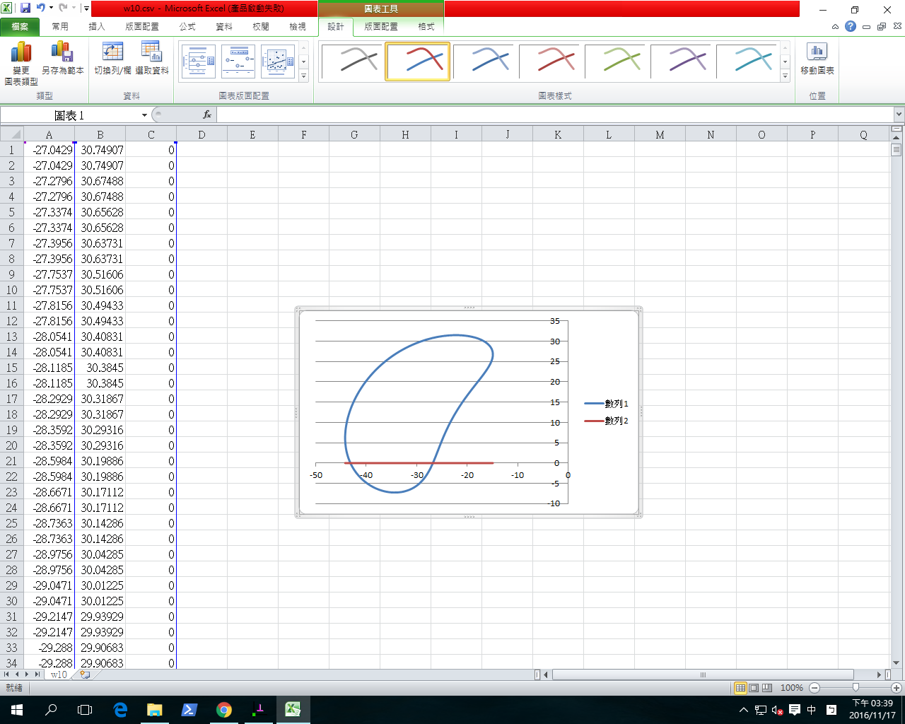
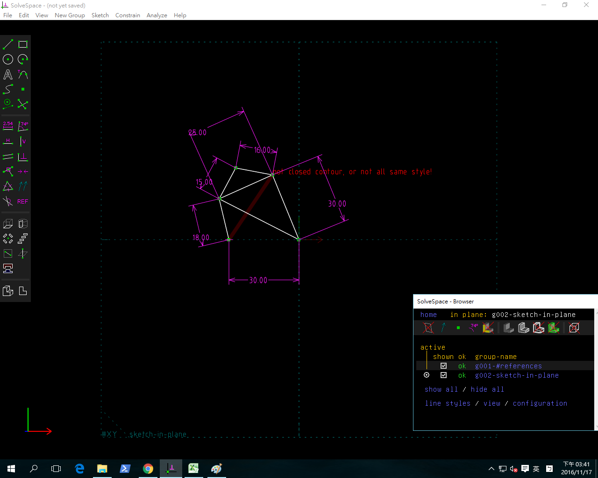

 
Python3 平面四連桿機構模擬:
Ubuntu 安裝 matplotlib:
sudo apt-get install python3-matplotlib
import math import time利用 matplotlib 程式庫畫出 contour 輪廓
import matplotlib.pyplot as plt
class Coord(object): def init(self,x,y): self.x = x self.y = y
1 2 3 4 5 6 7 8 9 10 11 12 13 14 15 | def __sub__(self,other):
# This allows you to substract vectors
return Coord(self.x-other.x,self.y-other.y)
def __repr__(self):
# Used to get human readable coordinates when printing
return "Coord(%f,%f)"%(self.x,self.y)
def length(self):
# Returns the length of the vector
return math.sqrt(self.x**2 + self.y**2)
def angle(self):
# Returns the vector's angle
return math.atan2(self.y,self.x)
|
def normalize(coord): return Coord( coord.x/coord.length(), coord.y/coord.length() )
def perpendicular(coord): # Shifts the angle by pi/2 and calculate the coordinates # using the original vector length return Coord( coord.length()math.cos(coord.angle()+math.pi/2), coord.length()math.sin(coord.angle()+math.pi/2) )
點類別
class Point(object): # 起始方法 def init(self, x, y): self.x = x self.y = y
1 2 3 4 5 6 7 8 9 10 11 12 13 14 15 16 | # 加入 Eq 方法
def Eq(self, pt):
self.x = pt.x
self.y = pt.y
# 加入 setPoint 方法
def setPoint(self, px, py):
self.x = px
self.y = py
# 加上 distance(pt) 方法, 計算點到 pt 的距離
def distance(self, pt):
self.pt = pt
x = self.x - self.pt.x
y = self.y - self.pt.y
return math.sqrt(x * x + y * y)
|
Line 類別物件
class Line(object):
1 2 3 4 5 6 7 8 9 10 11 12 13 14 15 16 17 18 19 20 21 22 23 24 25 26 27 28 29 30 31 32 33 34 35 36 37 38 39 40 41 42 43 44 45 46 47 48 49 50 51 52 53 54 55 56 57 58 59 | # 起始方法
def __init__(self, p1, p2):
self.p1 = p1
self.p2 = p2
# 直線的第一點, 設為線尾
self.Tail = self.p1
# 直線組成的第二點, 設為線頭
self.Head = self.p2
# 直線的長度屬性
self.length = math.sqrt(math.pow(self.p2.x-self.p1.x, 2)+math.pow(self.p2.y-self.p1.y,2))
# setPP 以指定頭尾座標點來定義直線
def setPP(self, p1, p2):
self.p1 = p1
self.p2 = p2
self.Tail = self.p1
self.Head = self.p2
self.length = math.sqrt(math.pow(self.p2.x-self.p1.x, 2)+math.pow(self.p2.y-self.p1.y,2))
# setRT 方法 for Line, 應該已經確定 Tail 點, 然後以 r, t 作為設定 Head 的參考
def setRT(self, r, t):
self.r = r
self.t = t
x = self.r * math.cos(self.t)
y = self.r * math.sin(self.t)
self.Tail.Eq(self.p1)
self.Head.setPoint(self.Tail.x + x,self.Tail.y + y)
# getR 方法 for Line
def getR(self):
# x 分量與 y 分量
x = self.p1.x - self.p2.x
y = self.p1.y - self.p2.y
return math.sqrt(x * x + y * y)
# 根據定義 atan2(y,x), 表示 (x,y) 與 正 x 軸之間的夾角, 介於 pi 與 -pi 間
def getT(self):
x = self.p2.x - self.p1.x
y = self.p2.y - self.p1.y
if (math.fabs(x) < math.pow(10,-100)):
if(y < 0.0):
return (-math.pi/2)
else:
return (math.pi/2)
else:
return math.atan2(y, x)
# setTail 方法 for Line
def setTail(self, pt):
self.pt = pt
self.Tail.Eq(pt)
self.Head.setPoint(self.pt.x + self.x, self.pt.y + self.y)
# getHead 方法 for Line
def getHead(self):
return self.Head
def getTail(self):
return self.Tail
|
class Link(Line): def init(self, p1, p2): self.p1 = p1 self.p2 = p2 self.length = math.sqrt(math.pow((self.p2.x - self.p1.x), 2) + math.pow((self.p2.y - self.p1.y), 2))
class Triangle(object): def init(self, p1, p2, p3): self.p1 = p1 self.p2 = p2 self.p3 = p3
1 2 3 4 5 6 7 8 9 10 11 12 13 14 15 16 17 18 19 20 21 22 23 24 25 26 27 28 29 30 31 32 33 34 35 36 37 38 39 40 41 42 43 44 45 46 47 48 49 50 51 52 53 54 55 56 57 58 59 60 61 62 63 64 65 66 67 68 69 70 71 72 73 74 75 76 77 78 79 80 81 82 83 84 85 86 87 88 89 90 91 92 93 94 95 96 97 98 99 100 101 102 103 104 105 106 107 108 109 | def getLenp3(self):
p1 = self.p1
ret = p1.distance(self.p2)
return ret
def getLenp1(self):
p2 = self.p2
ret = p2.distance(self.p3)
return ret
def getLenp2(self):
p1 = self.p1
ret = p1.distance(self.p3)
return ret
# 角度
def getAp1(self):
ret = math.acos(((self.getLenp2() * self.getLenp2() + self.getLenp3() * self.getLenp3()) - self.getLenp1() * self.getLenp1()) / (2* self.getLenp2() * self.getLenp3()))
return ret
def getAp2(self):
ret =math.acos(((self.getLenp1() * self.getLenp1() + self.getLenp3() * self.getLenp3()) - self.getLenp2() * self.getLenp2()) / (2* self.getLenp1() * self.getLenp3()))
return ret
def getAp3(self):
ret = math.acos(((self.getLenp1() * self.getLenp1() + self.getLenp2() * self.getLenp2()) - self.getLenp3() * self.getLenp3()) / (2* self.getLenp1() * self.getLenp2()))
return ret
# ends Triangle def
# 透過三個邊長定義三角形
def setSSS(self, lenp3, lenp1, lenp2):
self.lenp3 = lenp3
self.lenp1 = lenp1
self.lenp2 = lenp2
self.ap1 = math.acos(((self.lenp2 * self.lenp2 + self.lenp3 * self.lenp3) - self.lenp1 * self.lenp1) / (2* self.lenp2 * self.lenp3))
self.ap2 = math.acos(((self.lenp1 * self.lenp1 + self.lenp3 * self.lenp3) - self.lenp2 * self.lenp2) / (2* self.lenp1 * self.lenp3))
self.ap3 = math.acos(((self.lenp1 * self.lenp1 + self.lenp2 * self.lenp2) - self.lenp3 * self.lenp3) / (2* self.lenp1 * self.lenp2))
# 透過兩個邊長與夾角定義三角形
def setSAS(self, lenp3, ap2, lenp1):
self.lenp3 = lenp3
self.ap2 = ap2
self.lenp1 = lenp1
self.lenp2 = math.sqrt((self.lenp3 * self.lenp3 + self.lenp1 * self.lenp1) - 2* self.lenp3 * self.lenp1 * math.cos(self.ap2))
#等於 SSS(AB, BC, CA)
def setSaSS(self, lenp2, lenp3, lenp1):
self.lenp2 = lenp2
self.lenp3 = lenp3
self.lenp1 = lenp1
if(self.lenp1 > (self.lenp2 + self.lenp3)):
#CAB 夾角為 180 度, 三點共線且 A 介於 BC 之間
ret = math.pi
else :
# CAB 夾角為 0, 三點共線且 A 不在 BC 之間
if((self.lenp1 < (self.lenp2 - self.lenp3)) or (self.lenp1 < (self.lenp3 - self.lenp2))):
ret = 0.0
else :
# 透過餘絃定理求出夾角 CAB
ret = math.acos(((self.lenp2 * self.lenp2 + self.lenp3 * self.lenp3) - self.lenp1 * self.lenp1) / (2 * self.lenp2 * self.lenp3))
return ret
# 取得三角形的三個邊長值
def getSSS(self):
temp = []
temp.append( self.getLenp1() )
temp.append( self.getLenp2() )
temp.append( self.getLenp3() )
return temp
# 取得三角形的三個角度值
def getAAA(self):
temp = []
temp.append( self.getAp1() )
temp.append( self.getAp2() )
temp.append( self.getAp3() )
return temp
# 取得三角形的三個角度與三個邊長
def getASASAS(self):
temp = []
temp.append(self.getAp1())
temp.append(self.getLenp1())
temp.append(self.getAp2())
temp.append(self.getLenp2())
temp.append(self.getAp3())
temp.append(self.getLenp3())
return temp
#2P 2L return mid P
def setPPSS(self, p1, p3, lenp1, lenp3):
temp = []
self.p1 = p1
self.p3 = p3
self.lenp1 = lenp1
self.lenp3 = lenp3
#bp3 is the angle beside p3 point, cp3 is the angle for line23, p2 is the output
line31 = Line(p3, p1)
self.lenp2 = line31.getR()
#self.lenp2 = self.p3.distance(self.p1)
#這裡是求角3
ap3 = math.acos(((self.lenp1 * self.lenp1 + self.lenp2 * self.lenp2) - self.lenp3 * self.lenp3) / (2 * self.lenp1 * self.lenp2))
#ap3 = math.acos(((self.lenp1 * self.lenp1 + self.lenp3 * self.lenp3) - self.lenp2 * self.lenp2) / (2 * self.lenp1 * self.lenp3))
bp3 = line31.getT()
cp3 = bp3 - ap3
temp.append(p3.x + self.lenp1*math.cos(cp3))#p2.x
temp.append(p3.y + self.lenp1*math.sin(cp3))#p2.y
return temp
|
以上為相關函式物件的定義區
全域變數
midpt = Point(0, 0) tippt = Point(0, 0) contour = []
幾何位置輸入變數
x=10 y=10 r=10
其他輸入變數
theta = 0 degree = math.pi/180.0 dx = 2 dy = 4
set p1.p2.p3.p4 position
p1 = Point(150,100) p2 = Point(150,200) p3 = Point(300,300) p4 = Point(350,100)
create links
line1 = Link(p1,p2) line2 = Link(p2,p3) line3 = Link(p3,p4) line4 = Link(p1,p4) line5 = Link(p2,p4)
link2_len = p2.distance(p3) link3_len = p3.distance(p4)
triangle1 = Triangle(p1,p2,p4) triangle2 = Triangle(p2,p3,p4)
def simulate(): global theta, midpt, oldpt theta += dx p2.x = p1.x + line1.lengthmath.cos(thetadegree) p2.y = p1.y - line1.lengthmath.sin(thetadegree) p3.x, p3.y = triangle2.setPPSS(p2,p4,link2_len,link3_len) # 計算垂直單位向量 a = Coord(p3.x, p3.y) b = Coord(p2.x, p2.y) normal = perpendicular(normalize(a-b)) midpt.x = (p2.x + p3.x)/2 midpt.y = (p2.y + p3.y)/2 tippt.x = midpt.x + 150normal.x tippt.y = midpt.y + 150normal.y # 印出座標點 #print(round(tippt.x, 2), round(tippt.y, 2)) if theta < 360: contour.append((round(tippt.x, 2), round(tippt.y, 2)))
for i in range(180): simulate()
印出 contour
print(contour)
x_list = [x for (x, y) in contour] y_list = [y for (x, y) in contour]
plt.xlabel('x coordinate') plt.ylabel('y coordinate')
plt.plot(x_list, y_list) plt.show()